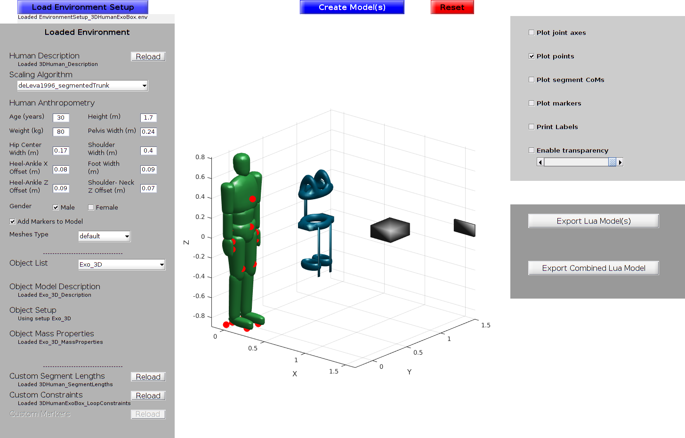
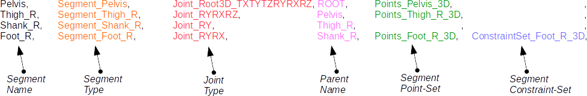
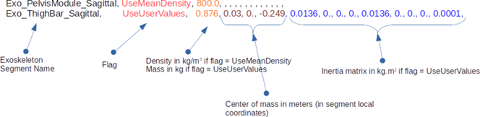
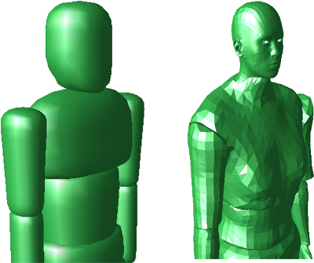
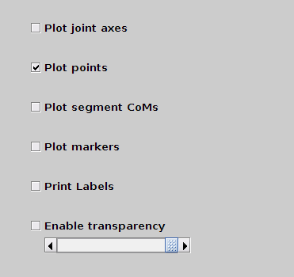
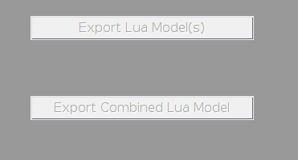

ModelFactory Documentation
Copyright (c) 2017 Manish Sreenivasa
Author: Manish Sreenivasa, manish.sreenivasa@ziti.uni-heidelberg.de, Heidelberg University, Germany
Licensed under the zlib license. See LICENSE for more details.
Developments of the toolkit can be followed on
Please cite this work as
Error using dbstatus Error: File: /home/manish/dev/spexor/ModelFactory/doc/doc_ModelFactory.m Line: 40 Column: 27 Unexpected MATLAB operator.
Contents
General Description
The ModelFactory toolkit consists of a set of scripts in Matlab®/Octave that can be used to create models of humans and objects By default a graphical user interface is included that works on Matlab (tested on Matlab 2017a®). A text based interface for Octave (tested on Octave 4.2.1) as well as Matlab®.

Environment Setup (Model Descriptions)
The environment file provides the ModelCreator script with all information needed to initialize, create and export the models. The fields present within the environment file should point to other files that describe the model setup. Comment lines start with a #. Some sample enviroment files are available in data/samples. Options loaded from the environment file can still be overwritten using the menu available in the GUI.
Setting up an environment: Environment files may be loaded in the GUI using the "Load Environment Setup' button located top left. In the non-GUI version, edit ModelCreator_noGUI.m to point to the right file
EnvironmentSetupFile = ['data/samples/EnvironmentSetup_3DHumanDefault.env'];
Human Model Options
humanModel_DescriptionFile %<----------- Specify source for human model description (mandatory) ModelFiles_3DHumanDefault/3DHumanDefault_Description % A sample annotated human model description file is shown below

humanModel_ScalingAlgorithmChoice%<----------- Specify source for human model scaling algorithm (mandatory) deLeva1996_segmentedTrunk %must match one of the algorithms included in core/scalingAlgorithms or one provided by the user humanModel_AnthropometryFile %<----------- Specify source for human anthropometry (mandatory) ModelFiles_3DHumanDefault/3DHumanDefault_Anthropometry AddMarkers %<----------- Boolean to add markers to the model (optional, defaults to 0/false) 1 %default VICON PIG markers are used if no custom marker setups are defined (see below) %
Object Model 1 Options (optional)
objectModel1_DescriptionFile %<----------- Specify source for model description of object 1 ModelFiles_3DHumanExoBox/Exo_3D_Description objectModel1_SetupChoice %<----------- Specify source for model setup function of object 1 Exo_3D %must match one of the algorithms included in customSetups/setups or one provided by the user objectModel1_MassProperties %<----------- Specify how object mass should be calculated ModelFiles_3DHumanExoBox/Exo_3D_MassProperties %(either as user specified values, or from segment mesh volume and segment mean density, or in setup function) % A sample annotated object mass properties file is shown below

Object Model 2 Options (optional) Additional objects such as boxes and other user defined elements can be created using the following options.
objectModel2_DescriptionFile %<----------- Specify source for object model description 2 ModelFiles_3DHumanExoBox/Box15kg_3D_Description objectModel2_SetupChoice %<----------- Specify source for object model setup 2, Box15kg_3D %must match one of the algorithms included in customSetups/setups or one provided by the user
Model Customization Options
The following optional customization options are currently implemented.
Custom segment lengths can be used to make the human model subject-specific. Note that the segment masses and inertia are also adjusted (linearly) proportional to the provided custom lengths
humanModel_UseCustomLengths %<----------- Specify source file for human segment lengths ModelFiles_3DHumanExoBox/3DHuman_SegmentLengths %
Custom markers can be defined to specify lab-specific arrangements. In addition to the default VICON PIG markerset, a custom "cluster" based markerset is cuurently available for use.
UseCustomMarkers
ModelFiles_3DHumanCustom/3DHumanCustom_MarkerOptotrak
%
Custom constraints can be used to define additional constraints, for example between the human and the objects. For now, only loop-type custom constraints are available between the human and objects
humanModel_UseCustomConstraints
ModelFiles_3DHumanExoBox/3DHumanExoBox_LoopConstraints
%
Two type of mesh options are available, "default" and "human". Default meshes plot the human limbs using simple cylindrical and other basic shapes. Human meshes have been derived from the MakeHuman software http://www.makehuman.org/, and are based on a neutral-gendered character. Note that if you use human meshes alongwith custom segment scaling you probably have to play around with the mesh dimensions and mesh centers (originally defined in the scaling algorithm) to make things look good.
humanModel_TypeMeshes
human
% Image below shows the default and human meshes

Model Creation
Once the environment options have been properly loaded, the ModelCreator script is ready to construct the model(s). In the GUI this is accomplished by the "Create Model" button, and in the non-GUI version this step is automatically started upon executing the ModelCreator script. Note that these steps only creates the model structures in Matlab/Octave and does not export/write anything to file. The model is setup sequentially as follows:
- Read human anthropometry
- Read human model description
- Read custom lengths (if any)
- Set human scaling algorithm
- Add custom markers (if any)
- Create human model with arguments 1-5 (core/fnc_createHumanModel(args)
- Read object descriptions (if any)
- Set object setups
- Add custom markers (if any)
- Create object models with arguments 7-9 (core/fnc_createObjectModel(args)
- Compute object mass and inertia properties (if provided additionally)
- Read custom constraints (if any)
Model Visualization
Pressing the Create Model button in the GUI plots the created model(s). Plotting options can be controlled via the check boxes on the right. In the non-GUI version simple plots can be created using the code below, and the plot details controlled using the booleans passed to the function core/plottingUtils/fnc_plotting_plotModel.m

% Function call format: 1) model, 2) plotJoints, 3) plotPoints, 4) plotComs, % 5) plotMarkers, 6) printLabels, 7) Mesh Alpha (transparency), 8) markerSize, % 9) rootDisplacement [x, y, z] % Note that alpha transparency values are not yet allowed in octave (so use 1.0) fnc_plotting_plotModel (humanModel, 0, 0, 0, 0, 0, 1.0, 20, [0 0 0]); for objID = 1:nObjects fnc_plotting_plotModel (objects(objID).objectModel, 0, 0, 0, 0, 0, 1.0, 10, [objID*0.5 objID*0.5 0.0]); end
Model Export
Writing of model lua file to disk can be controlled via the Save buttons on the right of the GUI. Note that the GUI preloads the filenames to be saved, but will not save automatically until told to do so (by pressing the button). In the non-GUI version file save is automatically executed at the end of model creation. If you do not wish to save files (e.g. to only visualize models), then just remove these fields or comment them in the environment file.

humanModel_Save %<----------- Specify target for saving human lua model, humanModel.lua %remove this to not save the model (automatically) objectModel1_Save %<----------- Specify target for saving object 1 lua model exoModel.lua objectModel2_Save %<----------- Specify target for saving object 2 lua model boxModel.lua combinedModel_Save %<----------- Specify target for saving combined lua model 3DHumanExoBox.lua %The combined model consists of human + objects, and any custom constraints